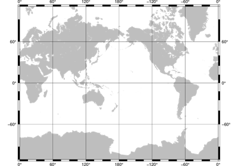

Projections¶
PyGMT support many map projections. Use the projection argument to specify which one
you want to use in all plotting modules. The projection is specified by a one letter
code along with (sometimes optional) reference longitude and latitude and the width of
the map (for example, Alon0/lat0[/horizon]/width). The map height is determined
based on the region and projection.
These are all the available projections:

